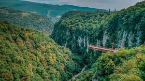

მარტვილის კანიონი Martvili Canyon:

ოკაცეს კანიონი Okatse Canyon
ენგურის კაშხალი Enguri Dam

სამეგრელო Samegrelo
სამეგრელო დასავლეთ საქართველოს ისტორიულ-გეოგრაფიული მხარეა, რომელიც მდინარე რიონს, ცხენისწყალს, ენგურსა და შავ ზღვას შორის მოქცეულ ტერიტორიას მოიცავს. მისი ცენტრალური ქალაქია ზუგდიდი. სამეგრელოს რეგიონს მთელი თავისი ისტორიის მანძილზე უდიდესი სტრატეგიული მნიშვნელობა ენიჭებოდა, რის გამოც რომაელების, ბიზანტიელების, მონღოლების, თურქების, სპარსელების, რუსებისა და სხვათა არმიების არაერთი შემოსევის ობიექტი გახდა. ეს მხარე მდიდარია სხვადასხვა ეპოქის კულტურის ძეგლებითა და შთამბეჭდავი ბუნებით, ცისკიდურთან, ჭინკების სამეფოში მოლივლივე ლურჯი ტბებითა თუ ულამაზესი კანიონებით.
Samegrelo is a historical and geographical region of western Georgia, covering the territory between the Rioni, Tskhenistskali, Enguri rivers and the Black Sea. Its central city is Zugdidi. The Samegrelo region has been of great strategic importance throughout its history, which is why it has been the object of numerous invasions by the armies of the Romans, Byzantines, Mongols, Turks, Persians, Russians and others. This region is rich in cultural monuments of different eras and impressive nature, with blue lakes and beautiful canyons in the Tsiskidi region, the Chinki kingdom.
ანტიკურ ხანაში სამეგრელო კოლხეთის სამეფოს ნაწილს წარმოადგენდა. კოლხეთი მთლიანად მოიცავდა დღევანდელი დასავლეთ საქართველოს ტერიტორიას. თანამედროვე ეპოქამდე ამ რეგიონს ლაზიკის და ეგრისის სახელწოდებებითაც იცნობდნენ, მისი პოლიტიკური ცენტრი არქეოპოლისი (ან ნოქალაქევი) იყო. სწორედ ნოქალაქევს უკავშირდება არგონავტებისა და ოქროს საწმისის მითი. რომაელებმა ეს მხარე ჩვენს წელთაღრიცხვამდე პირველ საუკუნეში დაიპყრეს და აქ თითქმის 400 წლის განმავლობაში ბატონობდნენ. XI საუკუნეში დასავლეთ და აღმოსავლეთ საქართველო ერთ სამეფოდ გაერთიანდა, რომელმაც XV საუკუნემდე იარსება. XV საუკუნის დასასრულს საქართველო სამ მოქიშპე, დამოუკიდებელ სახელმწიფოდ დაიყო: ქართლი, კახეთი და იმერეთი. შეიქმნა რამოდენიმე სამთავრო, რომელთაგან ერთ-ერთი იყო ოდიში. იგი დღევანდელი სამეგრელოს მთელს ტერიტორიას მოიცავდა. XII საუკუნის შუა წლებიდან მოყოლებული XIX საუკუნემდე ოდიშს დადიანების გვარის წარმომადგენლები მართავდნენ. 1803 წელს ოდიში რუსეთის პროტექტორატად გამოცხადდა. ამ დროისთვის აღმოსავლეთ საქართველო უკვე რუსეთის მმართველობის ქვეშ იყო. 1918 წელს საქართველომ დამოუკიდებლობა გამოაცხადა და სამეგრელო ახალი დემოკრატიული ქვეყნის ნაწილი გახდა. დღეს ისტორიული სამეგრელოს სამთავროს ტერიტორია სამეგრელო–ზემო სვანეთის ადმინისტრაციული რეგიონის შემადგენლობაში შედის.
In ancient times, Samegrelo was part of the Kingdom of Colchis. Colchis encompassed the entire territory of present-day Western Georgia. Before the modern era, this region was also known as Laziki and Egrisi, and its political center was Archeopolis (or Nokalakevi). It is Nokalakevi that is associated with the myth of the Argonauts and the Golden Fleece. The Romans conquered this region in the first century BC and ruled here for almost 400 years. In the 11th century, Western and Eastern Georgia were united into a single kingdom, which existed until the 15th century. At the end of the 15th century, Georgia was divided into three independent states: Kartli, Kakheti, and Imereti. Several principalities were created, one of which was Odishi. It encompassed the entire territory of present-day Samegrelo. From the mid-12th century until the 19th century, Odishi was ruled by representatives of the Dadiani family. In 1803, Odisha was declared a Russian protectorate. By this time, eastern Georgia was already under Russian rule. In 1918, Georgia declared independence and Samegrelo became part of the new democratic state. Today, the territory of the historical Principality of Samegrelo is part of the Samegrelo-Zemo Svaneti administrative region.
ამეგრელო თავისი ისტორიული წარსულით და ადათ-წესებით ძალიან საინტერესო მხარეა. ამ მხარის ყოფა-ცხოვრებით დაინტერესება წარსულში დიდი იყო. ბერძენი მწერლები კოლხებს ბიბლიური ნოეს შვილის - იაფეტის შთამომავლებად თვლიდნენ, ჰეროდოტე კი მათ ეგვიპტური წარმოშობის ხალხად მიიჩნევდა. ნიკოლოზ დამასკელი წერდა, რომ კოლხები მიცვალებულს მიწაში არ მარხავენ, არამედ ტყავში შეახვევდნენ და ხეზე ჩამოკიდებდნენ. ჰეროდეტეს ცნობით კოლხებს ჩვეულებად ჰქონდათ წინდაცვეთა. ასეთ ზნე-ჩვეულებებზე დიდ გავლენას ახდენდნენ მეზობელი კულტურები. გარედან შემოსული რელიგიურ კულტურებთან ერთად კოლხეთში გავრცელებული ყოფილა ხეთა თაყვანისცემა და სხვა, რომელთა ნაწილი სახეცვლილი ფორმით დღემდე გვხვდება სამეგრელოში, უმეტესად მაღალმთიან სოფლებში. ერთ-ერთი ასეთი ტრადიციაა „ყვავის წილი“, რომლის დროსაც კვერცხის ნაჭუჭს აავსებენ ღომით და ყველით, სახურავზე ააგდებენ და თან იტყვიან - ყვავის წილი, ამის შემდეგ ყვავი წიწილას არ წაიღებსო. საქართველოს ყველა კუთხში დიდი მნიშვნელობა ენიჭებოდა დატირების რიტუალს, ამ მხრივ ცნობილი ტრადიციაა მეგრული „ზარი“ - სარიტუალო სიმღერა მიცვალებულთა დატირებისთვის. სამეგრელო მდიდარი ფოლკლორითაც გამოირჩევა. ყველაზე ცნობილი მეგრული ხალხური სიმღერაა „მეგრული ნანა“ - იავნანა, რომლის ერთ–ერთი ჰანგი რუსმა კომპოზიტორმა, პეტრე ჩაიკოვსკიმ თავის ცნობილ საშობაო ბალეტში - „მაკნატუნა“ - გამოიყენა. ეს მშვენიერი პატარა ლექსი კი ალბათ ბევრს გსმენიათ:
მზე დედაა ჩემი,
მთვარე მამაჩემი,
წვრილ-წვრილი ვარსკვლავები
და და ძმაა ჩემი.
Amegrelo is a very interesting region with its historical past and customs. Interest in the life of this region was great in the past. Greek writers considered the Colchis to be descendants of the biblical son of Noah - Japheth, while Herodotus considered them to be a people of Egyptian origin. Nicholas of Damascus wrote that the Colchis did not bury the dead in the ground, but wrapped them in skin and hung them on a tree. According to Herodotus, the Colchis had a custom of circumcision. Such customs were greatly influenced by neighboring cultures. Along with religious cultures introduced from outside, tree worship and others were widespread in Colchis, some of which can still be found in a modified form in Samegrelo, mostly in high-mountain villages. One such tradition is “Kvavis Tsili”, during which an eggshell is filled with flour and cheese, thrown on the roof and said - Kvavis Tsili, after that the crow will not take the chick. In all parts of Georgia, great importance was attached to the ritual of mourning, in this regard, the famous tradition is the Megrelian “Zari” - a ritual song for mourning the dead. Samegrelo is also distinguished by its rich folklore. The most famous Megrelian folk song is “Megrelian Nana” - a lullaby, one of the melodies of which was used by the Russian composer Pyotr Tchaikovsky in his famous Christmas ballet - “The Nutcracker”. Many of you have probably heard this beautiful little poem:
The sun is my mother,
The moon is my father,
The tiny stars
are my sisters and brothers.
სამეგრელო დასავლეთ საქართველოს მთელ ტერიტორიასთან ერთად ზღვის ნოტიო სუბტროპიკული ჰავის ოლქშია მოქცეული. სამეგრელოს ვაკე–დაბლობი და გორაკ–ბორცვიანი ზოლი გამოირჩევა ნოტიო თბილი ჰავით, უთოვლო ზამთრით და ცხელი ზაფხულით. მისი საშუალო და მაღალმთიანი ნაწილებისთვის კი დამახასიათებელი ზომიერად ცივი და ცივი ჰავა, თოვლიანი ზამთრით და ხანმოკლე ზაფხულით. დაბლობში წლის საშუალო ტემპერატურა +13-19℃-ია. ჩრდილოეთით, მთების სიმაღლის მატებასთან ერთად, ჰაერის ტემპერატურა კლებულობს.
Samegrelo, along with the entire territory of Western Georgia, is located in the humid subtropical maritime climate zone. The plains and hills of Samegrelo are distinguished by a humid warm climate, snowless winters and hot summers. Its middle and high mountainous parts are characterized by a moderately cold and cold climate, with snowy winters and short summers. The average annual temperature in the plains is +13-19℃. In the north, as the height of the mountains increases, the air temperature decreases.
საქართველო ძალიან მდიდარია ნაირგვარი ლანდშაფტით, საოცარი ბუნებით თუ მრავალსაუკუნოვანი კულტურის ძეგლებით და ამ მრავალფეროვნებაში ნამდვილად საპატიო ადგილს იკავებს სამეგრელო. უძველესი ნამოსახლარები, უნიკალური ტაძრები და ციხესიმაგრეები საოცარ ისტორიებსა თუ მითებს გვიამბობენ და ზღვარი ქრება კიდეც ლეგენდასა და რეალობას შორის. ეს მხარე ნამდვილი ოაზისია უალამაზესი ხეობებით, ჩანჩქერებით, დაბლობის თუ ალპური ტბებით და ბევრი მომაჯადოებელი მღვიმით. კლდეებში ნატვრისთვალივით ჩაბნეული ტობავარჩხილი დაუვიწყარი შთაბეჭდილებების მორევია ყველა მნახველისთვის. სამეგრელოში მდებარეობს ენდემური სახეობებით მდიდარი კოლხეთის ეროვნული ნაკრძალიც. შეუძლებელია არ გაგაოცოთ მრავალტონიანმა ლოდმა, რომელსაც ქუაქანცალიას ეძახიან, რადგან ხელის მცირე შეხებაზეც კი ირწევა. როგორც ხედავთ, ამ მხარეში სხვადასხვა გემოვნების ადამიანმა შეიძლება იპოვნოს თავისი პატარა სამოთხე.
Georgia is very rich in diverse landscapes, amazing nature and monuments of centuries-old culture, and Samegrelo truly occupies an honorable place in this diversity. Ancient settlements, unique temples and fortresses tell us amazing stories and myths, and the line between legend and reality disappears. This region is a real oasis with beautiful valleys, waterfalls, lowland and alpine lakes and many enchanting caves. Tobavarchkhili, entangled in the rocks like a dream, is a whirlwind of unforgettable impressions for all visitors. Samegrelo is also home to the Kolkheti National Reserve, rich in endemic species. It is impossible not to be amazed by the multi-ton boulder, which is called Kuakantsalia, because it shakes even at the slightest touch of a hand. As you can see, people with different tastes can find their own little paradise in this area.
ვიკრიბებით: მეტრო რუსთაველთან. რედისონი - ველოსიპედის ძეგლთან 6:45 სთ-დან. გავდივართ 7:00 სთ-ზე.(გასვლისას ვინც არ იქნება, ვერ დაველოდებით, რადგან ტური გათვლილია დროში).
We meet: at the Rustaveli metro station. Radisson - at the Bicycle Monument from 6:45 AM.We leave at 7:00 AM. (We will not wait for anyone who is not there when we leave, as the tour is timed).
რა უნდა წამოვიღოთ ტურზე:
What to bring on the tour:
წესები Rules